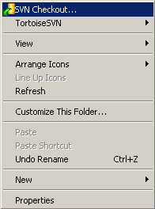
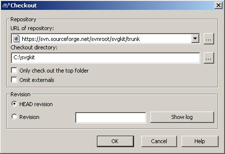

Subversion
The best way right to get SVGKit is from the subversion repository hosted at SourceForge.
- Browse the repository at http://svgkit.svn.sourceforge.net/viewvc/svgkit/trunk/
- Command line:To check out the trunk,
svn co https://svgkit.svn.sourceforge.net/svnroot/svgkit svgkit - Windows using TortoiseSVN: After installing, right click where you want to check it out, select "SVN Checkout..." and type the url
https://svgkit.sourceforge.net/svnroot/svgkit/trunk
 